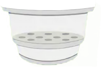
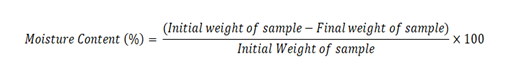

Step 1: Press ‘On’ button of the analytical balance
Step 2: Place the Petri dish on weighing balance

Step 3: Press ‘Tare’ button of the analytical balance to make it zero
Step 4: Weigh 5 g ground food sample


How much sample is taken to calculate moisture content in oven drying method
Step 5: Press ‘On’ button of the convective hot air oven and set temperature to 105°C (ST - Set tempreture, PT - Present tempreture)
What is the required temperature (°C) range for Moisture content estimation in oven method
Step 6: Place sample Petri dish in oven once present temperature reaches 105°C
2 hrs later remove the petri dish from the oven
Step 7: Place Sample Petri dish in descicator
Which apparatus is used to cool hot sample taken from oven before weighing?
Step 8: Take out petri dish and record the weight
Step 9: Place sample Petri dish in oven again
30 minutes later remove the petri dish from the oven
Step 10: Place Sample Petri dish in descicator
Step 11: Take out petri dish and record the weight
Step 12: Place sample Petri dish in oven again
30 minutes later remove the petri dish from the oven
Step 13: Place Sample Petri dish in descicator
Step 14: Take out petri dish and record the weight
Step 15: Place sample Petri dish in oven again
30 minutes later remove the petri dish from the oven
Step 16: Place Sample Petri dish in descicator
Step 17: Take out petri dish and record the weight
Observation
Weight of petri dish (gm) = 30
Weight of sample (gm) = 5
Intial weight of sample (gm) = 30 + 5 = 35
| S. No. | Weight (gm) |
|---|---|
| 1 | |
| 2 | |
| 3 | |
| 4 |
Weight loss of sample is highest during initial phase of process.
Calculation & Result
Equantion used
Moisture content (%) = 78
The relation between moisture content & food stability is